Panic Potato
See it, match it, grab it. A card game that ends in a scramble for the potatoes.
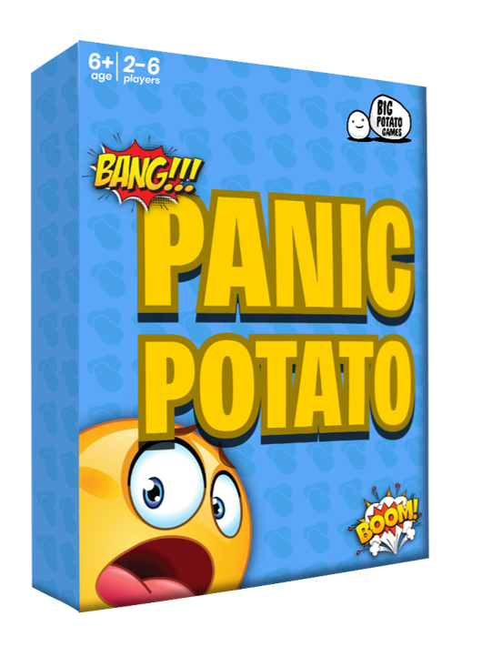
- Brief
- Set by Big Potato Games
- Type
- Party game, packaging
- Players
- 2 to 6
Design thinking
See it, match it, grab it
Three prototypes
Prototype 1
Cardboard cards coloured by hand and foam packing peanuts for potatoes. Testers found it too chaotic, so one player now calls when cards are passed.
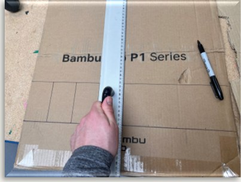
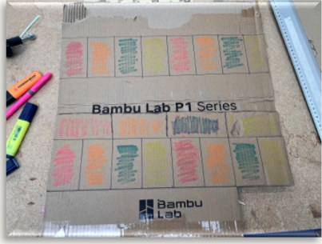
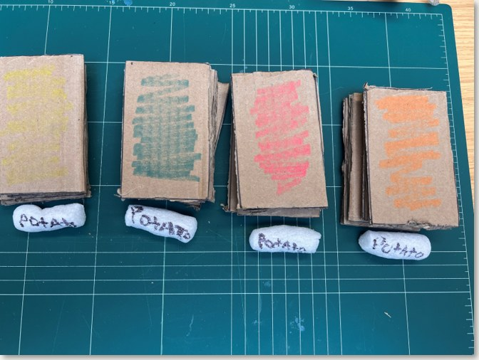
Prototype 2
Printed potato cards and real potatoes to grab. Testers disliked being knocked out, so elimination became stacking forfeit cards: whispering, one hand behind your back, commentating like a sports presenter. Staples in the cards caught on fingers.
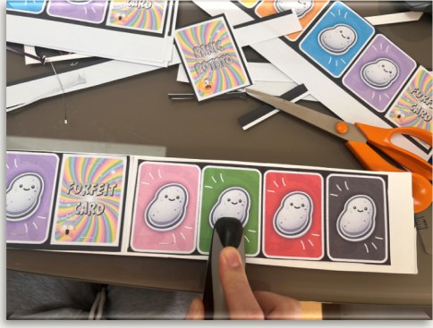
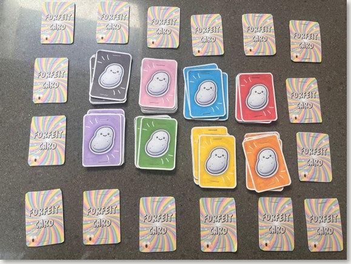
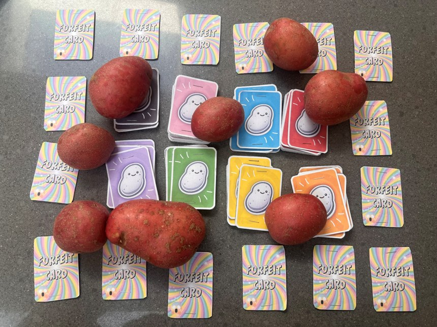
Prototype 3
Printed, laminated cards and squishy foam potatoes, safe to grab and easy to handle.
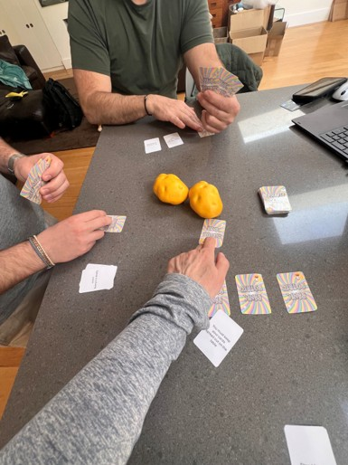
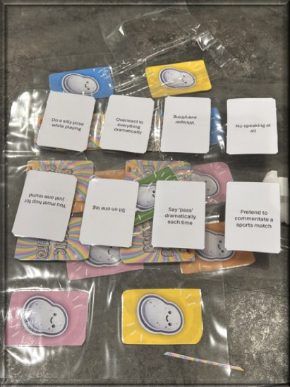
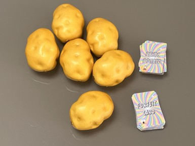
Built for the shelf
Store visits in Brighton showed party games compete on shelf presence. The 100 by 300 mm box gives a tall face for the graphics, and the potatoes stack inside it. The back carries the rules in five steps.
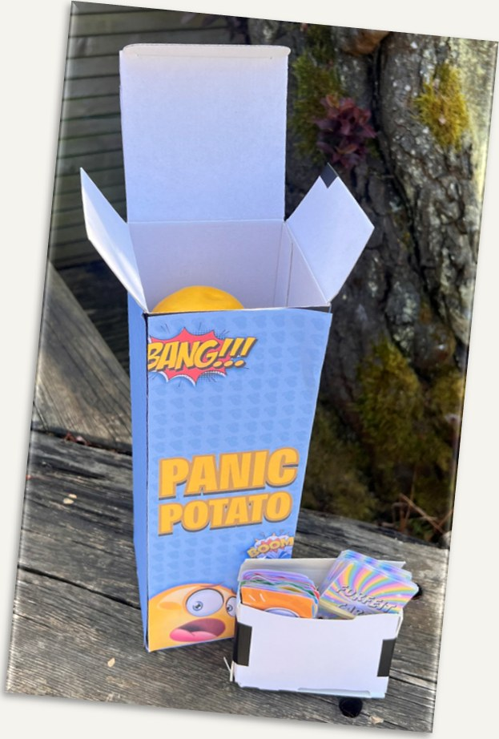
Front and back of packaging
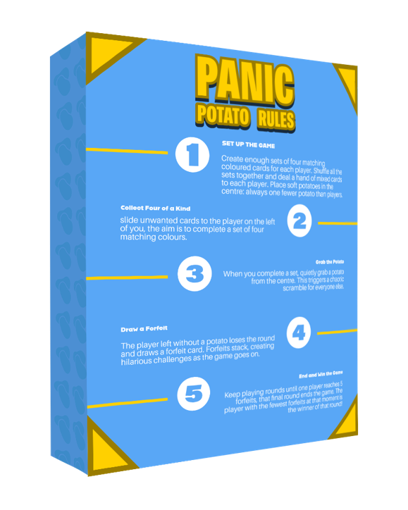